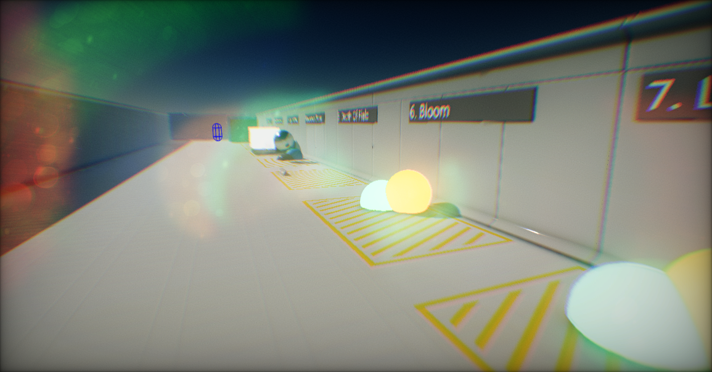

Flax Engine Documentation

Welcome to the Flax documentation repository. This repository contains all the source files for the Flax documentation (https://docs.flaxengine.com/). Anyone is welcome to contribute!
Editing
We use DocFX tool for building and hosting documentation online. It supports markdown style files (.md) as it's a very standardized and popular format. Writing technical documentation using markdown style is easy and efficient.
To edit docs we recommend you to use tools such as Zettlr or Typora or Visual Studio Code.
Building and Testing
Documentation can be built and hosted on both Linux and Windows. DocFx can run on .Net or Mono. By default the site is hosted on localhost:8080 but this can be easily configured.
Windows
- Download repository (or clone with
git clone https://github.com/FlaxEngine/FlaxDocs.git) - Call
build_manual.batto build the Manual orbuild_all.batto build whole documentation (with API) but it will take more time to finish - Call
run_local_website.batto preview the site
Linux
- Install Mono
- Clone repository (
git clone https://github.com/FlaxEngine/FlaxDocs.git) - Call
chmod +x docs.sh. It will modify permissions for the scriptdocs.shto allow to execute it - Call
./docs.sh rebuild